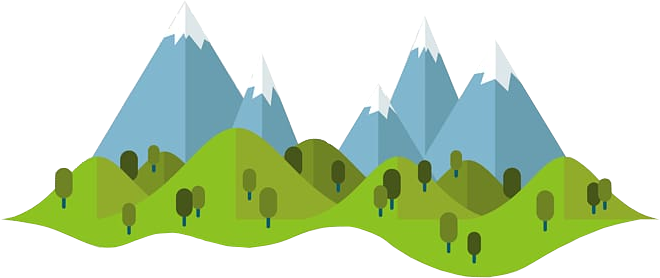
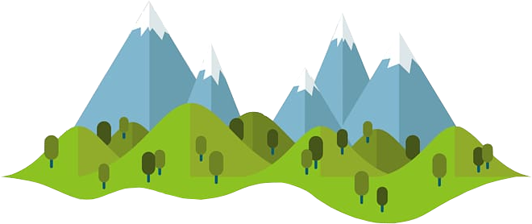

I'm Bartosz
a self-learning programmer



I am a Software Tester Candidate who also learns other technologies in order to this job efficiently. Gamer and fantasy enthusiast. Nature and animal lover.
First and foremost, I am a person which constantly analyzes things that fall into my perception. I realized that with my curiosity, I might be a good candidate for a software tester, since I've been testing constantly in my mind. My lifetime hobby also demands for constant analysis, because I am a Magic: The Gathering veteran and Role Playing Games lover.
I stumbled across programming during my Cognitive Sciences studies, where I learned LISP and Python languages. During a faculty, I also took a course of JavaScript. This site is a part of a course which helps me refresh my knowledge of site development and is a preparation of website mechanics for a Software Tester job.
In case you want to check out my Magic: The Gathering local playgroup site, you can do so by clicking here
Disclamer! This site is in Polish